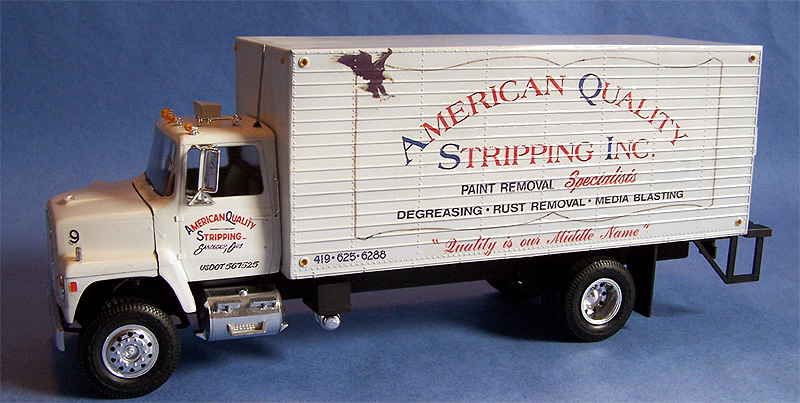
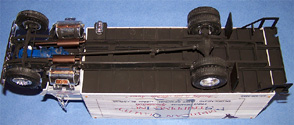
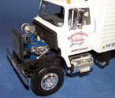
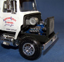
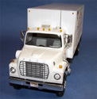
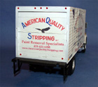

{kind=link}
{kind=link}
{kind=link}
{kind=link}
{kind=link}
{kind=link}
{kind=link}
{kind=link}
{kind=link}


AMT 1/25 Ford Louisville Delivery Truck

Kit #825
Collector’s Market Value $30.00
Images and text Copyright © 2007 by Matt Swan
I love building airplanes. Aircraft have fascinated me since my earliest days as a child and it is nearly impossible for me to not look skyward when I hear the sound of a piston engine in the air or pass by a hobby shop without at least taking a look. My wife says aircraft are my passion and I guess she is right. Even with being so passionate about aircraft and modeling aircraft it can become a little staid sometimes. Even the best of us (and I’m not claiming to be the best by any means) suffer from ‘modeler’s block’ occasionally. So what can you do to avoid this situation? Build something outside your comfort zone.
I think this is important not only to avoid the model subject humdrums but to also expand your capabilities as a modeler. If you are going to call yourself a modeler your should be competent in all aspects of modeling much like a musician does not play just one instrument but has some level of proficiency with several. There are specific techniques we use when building an aircraft and a certain order of assembly that each of us will fall into during the normal course of construction that are not necessarily the same when building a tank, car, truck or figure kit. Learning some new techniques and adjusting your assembly patterns can improve your abilities with your subjects of primary interest. And I’m not talking about just assembly here but painting techniques and decal application processes and wash application for specific effects. Recently I found myself slipping into that modeling humdrum and stepped outside the aircraft box to freshen things up.
I still had three different aircraft kits on the table in various stages of construction but could not bring myself to work on any of them. I looked into the stash and nothing from 400 plus kits was catching my eye – that’s when I knew I was in trouble. Looking deep into the stash closet I spotted an old AMT Ford Louisville delivery truck hiding behind the Monogram B-36 box (you could hide a lot of stuff behind that box). The kit comes stock as a Coca Cola truck with a lift gate but my imagination had stirred and lifted its sleepy head. At the plant where I perform the mundane duties as Chemical Engineer and Risk Manager we used to run Ford Louisville delivery trucks before we moved into Semis and still had one parked in the back lot for emergency deliveries which was a very close match to the model depicted by AMT, it just did not have the lift gate. I wanted to model an early American Quality Stripping delivery truck.
Since I was desperately in need to cut some plastic and glue some parts to revive my modeling spirits I did not pause to take pictures of sprues and such rather just jumped right in and started building. The kit was pretty nice in that there was little or no flash, few sink holes and lots and lots of parts to play with. The instructions were fairly clear and included some painting call-outs especially around the engine area and cab interior. There was a full sprue of chrome plated parts and a smaller sprue of chrome plated parts. These parts are what usually stop me from building cars and trucks because I really dislike working with them. I can never find an acceptable method of concealing glue seams on chrome. The kit included a small fret of clear parts that were not really clear. They had a certain cloudy aspect to them that did not come out entirely with buffing or being dipped in Future.



I started construction from two points simultaneously with the main frame pieces being glued together and the engine components being glued and painted. Keep in mind that you can click on any of the small images in this article to view larger pictures. I did the primary engine pieces with Ford Engine Blue and the used nearly an entire bottle of Testors flat black cut with lacquer thinner to paint the frame assembly. I went over the undercarriage with some silver dry brushing bolt heads and wear spots. The completed engine got a good sludge wash before being glued to the frame. Most of the overall assembly of the model was pretty straight forward; the thing that gave me the most trouble was the custom decals.
I elected to use Meteor Production’s clear decal film to print my decals on but first needed to create the artwork. I took my digital camera to the plant and took several photographs of the actual truck making every attempt to get shots of the decals from straight ahead to prevent perspective distortion. I took pictures of the license plates and tax stamps and every small marking I could find. Once this was done I headed back to the computer and loaded these images into Photo Adobe and began to clean them up. After a few days of playing around I had the base images I wanted, I then created a new blank art file the exact size of the truck body and used this to scale the decals. Next the images were broken down into ten components per side of the box and several for the cab. A test sheet was printed on white paper to check size and color density. Now I felt ready to print my first sheet of decals.
I prepared the raw sheet by burnishing the surface with 800 grit sandpaper before inserting into the printer. When the sheet came out it looked good but very quickly the ink pooled and the image deteriorated rapidly. It just would not bond to the carrier film. After a couple failed attempts I went to our local print shop where they had a color thermal imager and had them run the white paper test shot through and copy it onto my decal film. This worked great and only cost me a dollar per 8 by 11 sheet. Once the sheets (2) were done and dried for a little while I coated them with two light coats of Testors decal fixative.


Back to the kit construction, I had to learn to deal with chrome seams. Ultimately I cleaned up each glue seam with a razor knife until it was smooth then cut thin strips of Bare Metal Foil Chrome and laid this over each seam. Worked like a charm. During construction I managed to lose one headlight lens but was saved by another modeler who was able to provide me with a couple spares. The model kit was done with gray plastic and I need to paint it white. White and yellow are often challenging for many modelers but I have found a cure. First I primed the model with Mr. Surfacer 1200 thinner 50% with lacquer thinner then airbrushed Model Master Header Flat White. Now at this point you’re probably saying flat is not appropriate for a truck and you are correct but wait – I’m not done yet. Once the white had cured for a day I polished it lightly with 800 grit sandpaper then started laying on coats of Future floor polish thinned with isopropyl alcohol. This gave the model a nice semi gloss finish and a good base for decaling.
Decals went on fairly well. The largest challenge here was their sheer size. I had broken things down into segments but the carrier film is so thin on the Meteor Productions sheet that extreme care and lots of water needs to be used. I added water to tough spots with a large soft paint brush and carefully worked the decals into position before treating with liberal amounts of Micro-Sol. Once the decals had dried down I cut the seams on the side cargo door and the rear overhead door with the tip of my razor knife. The final step was another coat of Future to seal the decals. Since this is ultimately going to be a display model at the plant I kept the entire build clean. Maybe next time I’ll work on dirtying up the tires and undercarriage. As a last note, I feel ready to start work on my aircraft kits now.